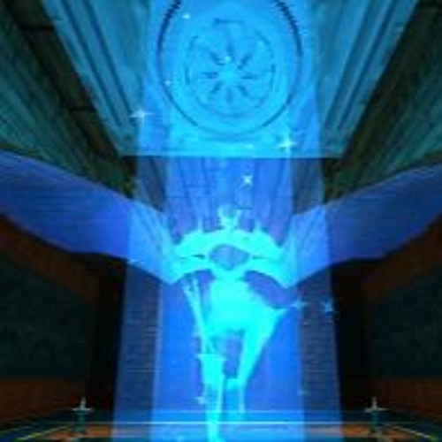

photo taken by my favorite twitter user and 67 spammer Tam!
Hey there!
It's Rory, that one person you know from Texas who's really into STEM (space specifically), hangouts with friends, character analysis, being outdoors, yapping, and the hit video game ULTRAKILL (go play the demo!!!) I made this page so that I could digitally scrapbook the amazing time I've spent with you all, as I don't really like social media platforms much as a way to share such fond memories. Plus, it also gives me full control over the medium i use, aesthetic of the page, and fun little quirks i add! This page will forever be a work in progress, and i hope to add more fun things to it in the future! In the meantime, enjoy all of the things this page has to offer :]
- Rory
Claude Debussy - Clair de Lune
ULTRAKILL - Bach BWV 639 I call to you, Lord Jesus Christ
NieR:Replicant - Kainé Salvation
NieR:Replicant - Village Theme
NieR:Automata - Vague Hope (Cold Rain)
Xenoblade Chronicles: Definitive Edition - Title Theme
Xenoblade Chronicles: Definitive Edition - Valak Mountain (Night)
Xenoblade Chronicles 2 - Title Theme
Xenoblade Chronicles 2 - Tantal (Night)
Xenoblade Chronicles 2: Torna - Auresco, Royal Capital (Night)
Shin Megami Tensei: Devil Survivor - Sunset
Final Fantasy VII - Anxiety
Fire Emblem: Three Houses - Scales of the Goddess
Select a track from the list to load it in the music player!
Autoplay


Loop

Fraud gives me headaches, but they're like, sensory overload headaches, in a good way???? I don't really know what I'm saying here, but my point is that Fraud is a really, REALLY fun layer that always keeps you guessing and is full of crazy hype moments and aura. When I firsst started the layer, I was still bad at the game, but I thought I was decent after clearing Violence. Fraud made me mad. The levels took forever, and some of the rooms felt crazy unfair, even for Standard difficulty. However, when I reattempted them after clearing Minos Prime and P-ranking everything in Greed, I was surprised to notice that I was actually... having fun?! I was somehow enjoying 8-3 after my first clear took a grand total of 70 minutes?! And even beat the secret room in 8-2 on my first try??? It felt like heresy (READ IT LIKE A PUN, NOT THE ACTUAL LAYER), but Fraud quickly became my favorite layer that the game has to offer.
I love Ultrakill, it almost feels like it's all I think about. As every other Ultrakill fan has done, I've ranked every Ultrakill level (up to the end of Fraud!) Some levels are, without a doubt, better than others. However, I don't want to talk about the more boring ones, so I'll only be discussing my top 10 (excluding secondary levels)! Here's a mandatory spoiler warning (since these levels are SO GOOD BLIND!!!)

#10: 7-4 ...LIKE ANTENNAS TO HEAVEN
Benjamin is peak for a reason. Being able to scale the massive titan that is the Earthmover just feels so awesome, especially with the dark aesthetic of the layer. The function of the Earthmovers in lore as entire city-warmachines is so awesome. And I love the escape sequence at the end, it's LITERALLY cinema. Not only do you get to take down a massive death machine, but you also get to clear out some pretty fun arenas! And the connections in lore between V1 and the Earthmovers makes the fight feel even more personal, almost as if it's the only moment in the entirety of the game where V1 fulfills one of the purposes they were originally constructed (don't say it YET!) for. The Earthmover fight is absolute cinema!!!!

#9: 4-4 CLAIR DE SOLEIL
V2 is back, and better than before! This fight is such a fun take on the original V2 fight, even though the community discovered enough techs to make V2 a laughing stock. The way V2 switches fighting styles based on how you approach them (backing off when you come in close, closing in when you attempt to get distance) makes the fight really dynamic, and the SLIDING SEGMENT AT THE END IS SO EPIC. Dumping everything you have onto a smug V2 is so satisfying when they finally land with a splat, and you get the whiplash! And finally, this level gives us a satisfying conclusion to the V models' rivalry, setting up the idea that V2 was never on our level, and that Gabriel is our true rival (and narrative foil). Even so, V2 was such a great opponent that fans kept believing that V2 was still alive... and Hakita had quite an answer to that.
#8: 4-2 GOD DAMN THE SUN
Let me preface this by saying that THIS LEVEL SUCKS TO P RANK. You basically have to kill the boss instantly by dropping him into a hole in order to meet the time requirement. HOWEVER, that doesn't mean that it isn't super fun when you're playing it normally! The two arenas to get the blue and red skulls are SO MUCH FUN! The enemy balance is great, And the introduction of sanded enemies brings a whole new level of depth to combat, where you have to approach certain encounters with a new abundance of caution (this is a nod to how I suicide launch myself into enemies and pray it works.) And if I'm not mistaken, this is the first level where you can QUADRUPLE WIELD YOUR WEAPONS! Yes, that means 4 CHAINSAWS. 4 RAILGUNS. 4 JACKHAMMERS. AND 16 TOTAL COINS!!!!!! 16!!!!!! Sure, you have to carefully navigate the level to procure all of the dual wields in time, but the result is SO worth it. The hype environment of Greed combined with awesome arenas makes this level goated for me.

#7: 6-2 AESTHETICS OF HATE
You probably know that I REALLY like Gabriel Ultrakill. So it should be no surprise that his most iconic appearance is on this list, and for good reason! Gabriel's boss fight in 6-2 really allows Gianni's fantastic voice acting to shine, Gabriel's speech and voice lines are iconic for a reason! Gabriel in general is also just super fun to fight, you really have to learn his attacks and master the art of dealing big damage fast to stand a chance against him. On a different note, HIS VOICE LINES!!!!!! OH MY GOD!!!!!! Don't get me wrong, I love "You need more power!" and "You're getting rusty, Machine!", but "Come on, machine! Fight me like an animal!" and "Come get some blood!" with his manic giggle are INSANE!!!!! I GENUINELY turn down my laptop volume whenever I fight this freak just because the voice lines feel sus!!! But anyways, The Death of God's Will goes crazy hard, can you believe that Hakita made it the literal DAY before release???? Everything about Gabe's 2nd fight is so awesome, and I always have fun replaying it!

#6: 8-2 THROUGH THE MIRROR
The level design gives serious backrooms energy, with all of the empty generic office spaces and color schemes that scream "something isn't right." Everything in this insane level really personifies the insanity that is the Fraud layer, and I love revisiting the level to rediscover it, as I often forget the specifics of every insane arena it has. Hakita cooked so hard on the tracks (as usual), did you know that Never Odd Or Even is almost the exact same tune when reversed? And No Devil Lived On is SO fun, it perfectly fits some of the grocery store arenas! Also, the LORE TIDBITS and V1 REFLECTION???? The data on the SmileOS and Nocturnal systems is really interesting when you wonder about where it comes into play, and BROKEN PUPPET V1 TANGLED IN THEIR STRINGS GOES CRAZY HARD. The only two things that prevent this level from being in my top 5 are #1: the fact that it's SUPER confusing to navigate, and #2: THE MIRROR REAPER. The level design really centers on a few rooms with long paths that lead back to the central one, making navigation hard when you're looking for the next room out of a bunch of familiar doors, and the glass cannon that is the mirror reaper makes this level a massive pain to P rank (or just clear while feeling good about your skills!)
#5: 7-2 LIGHT UP THE NIGHT
I think we all know that Violence is, in fact, peak fiction. The way the rooms, similar to the ones we encountered in 7-1, are entirely wrecked and accessible through broken ceilings is haunting, and the Earthmovers in the background are SO AWESOME. Although the level is confusing at first, learning the layout makes replays a lot more fun where you can just enjoy the challenging enemy combinations. The soundtrack really exacerbates the dark atmosphere, and all of the tragedy involved with humanity and the Final War. The red skull arena was super difficult when I first started playing the game, but now that I don't have a major skill issue, I love the challenging yet manageable arenas with multiple gutter-enemies! The introduction of the gutterman and guttertank really set the somber tone of the layer over humanity's failures, and the lore books in this level go crazy! (The gutterman lore is NUTS, look it up for a tiny spook...) 7-2 gives us a great look at the failures of the human race, and upon knowing all of the lore, makes it a harrowing yet fantastic replay. Also, I actually like the little whiplash segments a lot, they provide a nice change of pace from the constant difficult battles with the new enemies. Finally, you can unlock the jackhammer here. Do I need to say more?

#4: 5-3 SHIP OF FOOLS
I will never understand why people dislike this level, even if the P rank is frustrating. Death Odyssey is such an awesome theme that really gets you hyped to clear the tough rooms, it's a perfect bombastic tune that is beautifully translated into a somber song upon the ship crashing. The big change with the shipwreck is such a fun tonal shift that makes this level really memorable for me. And the arenas are SO GOOD!!!! It's the perfect amount of challenge both for players clearing the layer for the first time, and veteran players going for a P rank. The room with the dual wield is possibly one of my favorite arenas in the game, I love hunting down the hidden virtue that I always forget about, while rushing to clear maurices and the devious mindflayer all shooting tons of projectiles at once. Also the architecture found all around the level is lots of fun to travel through. I love seeing the funny little Gabriel hologram and statue, as well as how pretty the ship is in general! Plus, Gianni's voice acting makes me feel even worse for the Ferrymen, that entire side-lore is so so sad but it really helps you to see Gabriel as a more fleshed out yet flawed character (when thinking about his blind devotion and unfulfillable promises to the Ferrymen). Finally, you get the rocket launcher in this level... enough said.


#3: 8-1 HURTBREAK WONDERLAND
I LOVE FRAUD!!!!! Can I really talk about 8-1 without mentioning the AWESOME fake-out level exit that introduces you to the true insanity of Fraud??? That fake exit is genuinely so cool!!! It really sets you up for all of the other insane moments that the rest of the layer will have, and the arenas are a lot of fun! I'm a bit of a masochist, but that final arena with the triple-idoled virtue is SO fun to play, I love the anxiety of rushing to find the idols in the super confusing landscape, all while shredding everything around you into a bloody mess. The arenas perfectly bridge the difficulty of Violence to a harder layer, giving you a challenge that isn't too crazy while preparing you for the insanity that is 8-2 and 8-3. Also, In Absentia Logos and Spiral Out are genuinely some of Hakita's best songs!! The beginning of the level presents Fraud as a strange yet doable layer, but with the fake-out and bombastic intro of Spiral Out, we learn that we're NOT READY for how PEAK this layer will be. Plus, all of the lore drops???? Hello????? What do you mean God looks like THAT???? Gabe your dad is CHOPPED!!!! And the Archangel crew on the wall???? The introduction to enemies with eyes in search of Gabriel makes the scratched out Lucifer (I assume???) SO much more impactful when we know that angels have to keep their eyes shut after Lucifer saw and disagreed with the horrors of hell!!!! 8-1 is so so so peak fiction: it's a perfect balance of lore, hype moments, and awesome combat!!
#2: 8-3 DISINTEGRATION LOOP
THIS LEVEL. IS SO FREAKING GOOD. "Oh haha Hakita, you won't fool me with another fake exit-are we in SPACE???????" On a different note, THE POWERS ARE SUCH NEAT ENEMIES, both in lore and in game!!! Their intro is awesome, and they make what would typically be hard arenas into really exciting challenges that feel great to overcome. 8-3 literally feels like an attack on the senses in the best way possible, even if some of the rooms are outrageously difficult. This level would be my number one if the entire level wasn't as lengthy (and more akin to the structure of 8-1, where the length wasn't frustrating and didn't detract from the experience). Other than that, 8-3 is such a unique experience that I can't help but rank it super high. Also, THE MUSIC USES 3 OF THE BEST TRACKS IN THE ENTIRE GAME. The Break is incredibly foreboding, and really sets you up for the insanity that comes next. THE SHATTERING CIRCLE IS HAKITA'S BEST SONG. I WILL DIE BY THIS OPINION. THE BEAT DROP UPON ENCOUNTERING THE POWERS IN GABRIEL'S GLUTTONY ARENA IS SO, SO, SO AWESOME. AND THE INSANE TIME SIGNATURES ARE SO GOOD!!! It really highlights how it feels like reality itself is breaking around you with all of the changing arenas and portals, absurd crowds of enemies, and seemingly infinite "particle accelerator" rooms (THE CHALLENGE FOR THIS LEVEL IS SO FUNNY). Finally, EVENT HORIZON (AKA ABSOLUTE CINEMA!!!!) THE WORLD LOOKS RED MOTIF FITS THE SPACE SEGMENT SO WELL!!!! This level is unfathomably hype, and I always have a blast upon replaying it!

#1: 6-1 CRY FOR THE WEEPER
Also, Heresy is THE MOST SLEPT ON LAYER, the red aesthetics and intimidating environment really push you to reflect on your long journey and see how far you've come... as well as the fact that Hell's blood supply is rapidly depleting. The arenas are fantastic and really get you ready for the cinema that is Act 3. I love the fact that rather than a few big long arenas, you get a lot of different rooms with tough enemies instead. These rooms are tough on their own, and allow you to see more of the awesome architecture found throughout Heresy, really giving you the taste of the entire layer despite it being a crescendo. I love the final room with Gabriel's mini speech, the rage in his voice (and his Act I conclusion) both fit so well with the entire dangerous vibe of the layer. To me, hideous masses are perfect for this level because I like to think that they reflect how he fell from his position, now unseemly and looked down upon by the Council, hideous and an embarassment for failing at his mission. (It's also really neat how he's reduced to "it/its" pronouns by the Council rather than "he/him" to show that he's strayed from God's image (who goes by He/Him), and now is lower to the Council than a mortal... he's been reduced to the same level of respect that they have for the inhuman machine, which he hates so passionately (until he realizes it isn't hate he feels...)) All of the little Gabriel tidbits, the foreboding layer atmosphere, and the multitude of awesome rooms really make this level an absolute blast in my eyes, and it hypes up Aesthetics of Hate extremely well. Also, Altars of Apostacy is a masterpiece, there's a reason as to why it's Heaven Pierce Her's most played song on Spotify.

...that took WAY longer than I thought it would, WOW. Regardless, I'm really glad I got to yap about my favorite levels and their best moments! In retrospect, my favorite layers are definitely Fraud and Violence, followed by Heresy, then Greed, then Gluttony. My least favorite layer is the Prelude, but if you really needed me to pick a main game layer, it would be Limbo. Some of my honorable mentions include 7-3, 3-1, and 2-3. My DISHONORABLE mentions include 2-1, 4-3, and 5-2 (NOT INCLUDING FERRYMAN I LOVE HIM!!!!). I hope you enjoyed my ramblings (or at least the funny little images and videos they came with!)
Disclaimer: Metal Gear Solid 2: Sons of Liberty is a game. I think it is a fantastic game. It is a game you should play without spoilers so CLICK OFF if you're remotely interested in playing it blind.
With that out of the way, I want to talk about its main character, Raiden, also known as Jack (+ the Ripper). When the 2013 hack and slash title Metal Gear Rising: Revengeance exploded in online popularity during 2022, I found myself logging into Steam for the first time in a couple of years and buying the game, which became my obsession for that entire summer. Of course, that led me to research more of the Metal Gear series, and when I eventually mastered the art of emulation in late 2025, I finally got my hands on MGS2 and MGS4. With the context of MGR upon reaching the ending of each game, I was confused. Raiden expresses his contentment with settling down with Rose, and in MGS4, raising his son in their newly reunited family. However, the absolutely over-the-top bloodbath that is MGR has him barely mention Rose, and primarily accepting his need for bloodshed as a product of his upbringing... which is the antithesis of MGS2, where he seeks to leave his past behind entirely! In my opinion, both games do a good job of characterizing Raiden, but he emerges from each game as a completely different person. Here are my thoughts on his general storyline from MGS2 to MGR, and how the changes he undergoes in MGR align with MGS2's values.
Raiden in MGR is messy. In fact, there is so much mess on him that it appears that the mess is quite literally who he is and he, as a result, does not look messy anymore. MGR Raiden is a deeply wounded murderer who, upon realizing that his past defines his actions, uses his need for bloodlust as a force of justice, so that others don't become victims to the systems of war that he suffered. Still, I interpret Raiden's broader storyline as a lesson that while our pasts shape us into who we become as people and the values we uphold, they do not define our character and relationships with others. Although Raiden believed that he could grow into a domestic life and forget about who he was raised to be, upon realizing that he quite literally could not escape his need for bloodshed, he used his ___ as a tool to uphold his values and ___. However, he still cherishes a relationship with his wife and a newly born son, with no issues to be seen (as we know they worked out those awfully messy bits in MGS2 and MGS4)! Raiden's past defines how he approaches his life, and with healing, lost its influence on how he treats those he loves (outside of protection). Although Raiden's writing in MGR is a mess and not easy to make sense of outside of the hype moments it gives him, it serves as an important message that it's never possible to truly escape your past. In order to unlock your full potential, you need to accept it, in all of the messiness and pain it has brought you, and learn from it to move forward. This brings me to my second main idea: morality is never black and white, and in order to achieve true ___, you must accept that as well. Upon being shown the thoughts of the PMC mercenaries by Sam, Raiden is initially unable to accept the hypocrisy in his values: he thought that he was doing the world a favor by disposing of everyone ___, ___. However, upon accepting that on his bloody quest to stop the ___, there are innocent lives thrown into the mix who need to fight in order to support their families, and there is no way ____. The choice Raiden faces ___, and based on his experiences, he chooses to save the children, so that they don't end up like him. Many people on the internet have reduced his character to one that fits their tastes concerning a ___, and shun the Raiden who served as the foundation for who MGR Raiden grew into.

About
Gallery
Projects
Music
Thoughts